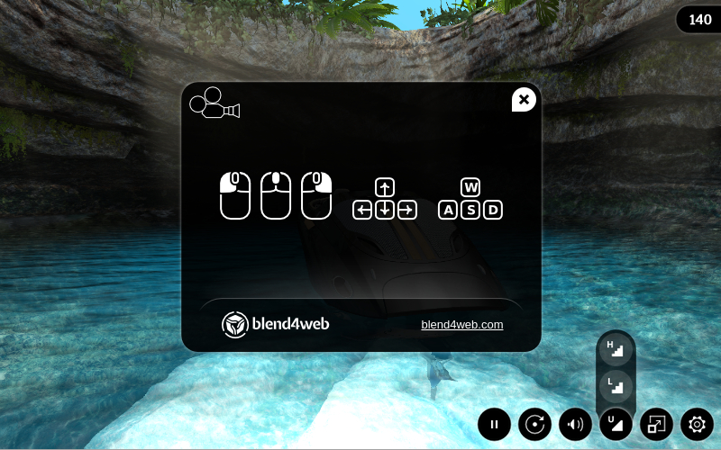
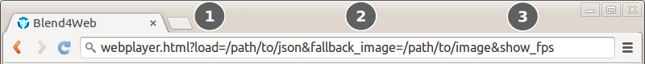

Web Player¶
The web player is a special application for rendering models and scenes in a demonstration mode.
Desktop version:
{kind=link}
Mobile version:

Usage¶
You can copy the directory containing the web player files, namely deploy/apps/webplayer, from the Blend4Web SDK distribution and deploy it on your web site. You can place the exported scene files on your web site and specify the path to them (absolute or relative) with the load web player parameter.
When you export into a single HTML file the web player interface is integrated automatically into it.
Navigation¶
The camera (in the Target and Eye modes) is controlled by the mouse with it’s button pressed or with the keys: W, A, S, D, R, F (forward, left, back, right, up, down). The numpad keys are also supported.
Control Panel¶
The web player’s control panel is shown below.

show / hide control panel;
fullscreen mode on / off;
set the scene quality;
sound on / off;
camera auto rotation mode on / off;
run / stop the engine;
open the help window;
tweet;
share via Facebook;
share via Google+;
share via VK.
Attributes¶
Web player accepts attributes from the browser address line:
{kind=link}
the special attribute
loadis used to load the scene, this attribute contains relative path to a JSON file.in case of a WebGL error the optional
fallback_imageattribute is used to setup the background image instead of 3D content.in case of a WebGL error the optional
fallback_videoattribute is used to setup the background video instead of 3D content. Can be used many times to add more video formats.the optional
show_fpsattribute is used to display the FPS counter in the player’s top right corner.optional parameter
autorotateis used to enable automatic camera rotation just after the scene loads.the
compressed_texturesoptional parameter is used to enable loading of minified and compressed textures (in DDS format).optional
alphaparameter is used to enable transparency for the rendering area.
Note
If both fallback_image and fallback_video parameters are specified, the fallback_image parameter is used.
Scene Name as Title¶
By default the Web Player has the Blend4Web Web Player title. Assigning the meta tag title on the scene in Blender you can change that value to something else.

{kind=link}
{kind=link}
{kind=link}